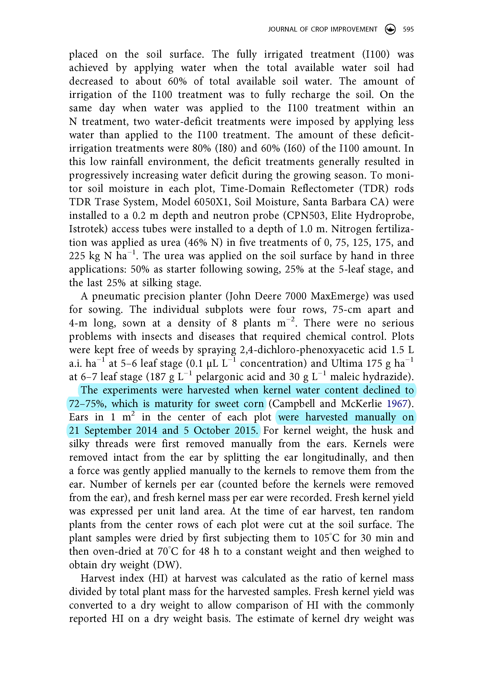
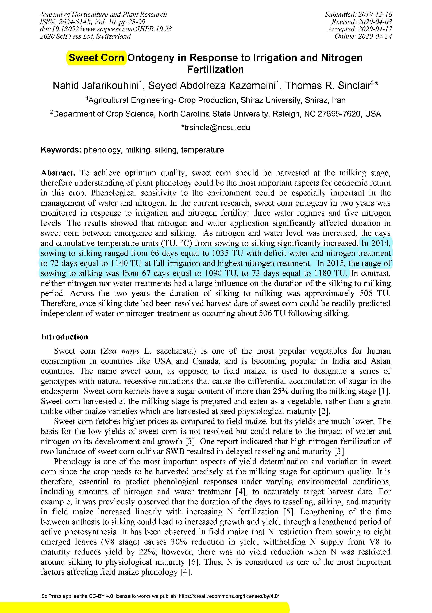
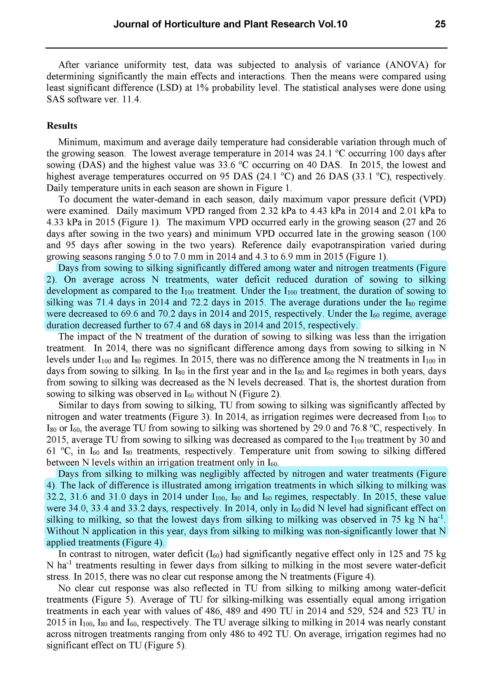

Apparent discrepancy between the reported phenological stages and harvest dates
Procedural status: The chronology concern and supporting material were included in a supplementary submission to Taylor & Francis on 27 November 2026.
I would like to draw attention to an apparent chronological discrepancy between the harvest dates reported in the paper Fresh sweet corn yield sensitivity to deficit nitrogen and water conditions and the phenological development reported in a related publication by the same research group:
Jafarikouhini, N., Kazemeini, S. A., & Sinclair, T. R. (2020). Sweet Corn Ontogeny in Response to Irrigation and Nitrogen Fertilization. Journal of Horticulture and Plant Research, 10, 23–29. https://doi.org/10.18052/www.scipress.com/JHPR.10.23
The 2021 paper, first published online on 28 October 2021 and subsequently included in the 2022 journal issue, reports that sweet corn was sown on 18 June 2014 and 10 July 2015, and harvested on 21 September 2014 and 5 October 2015, respectively, when kernel water content had declined to 72–75% (Materials and Methods, p. 595).
However, the related JHPR paper reports the following phenological durations:
- Sowing to silking: 66–72 days in 2014 and 67–73 days in 2015.
- Silking to milking: 31.0–32.2 days in 2014 and 33.2–34.0 days in 2015, depending on irrigation treatment.
The JHPR paper defines milking as the stage at which 50% of the plants show kernels containing milky-white fluid, corresponding to approximately 80% kernel moisture. It also states that the milking stage, and hence the harvest date, can be predicted at approximately 506 temperature units (TU) after silking.
Using the treatment-level mean durations reported in JHPR, the approximate expected calendar windows for milking are 24–30 September 2014 and 19–24 October 2015. These are calculated dates, not dates directly reported by the authors.
Consequently, the harvest dates reported in the 2021 paper precede these approximate milking windows by about 3–9 days in 2014 and 14–19 days in 2015. This is particularly notable for 2015. Furthermore, the reported harvest kernel water content of 72–75% is lower than the approximately 80% moisture level used to define the milking stage in the JHPR paper.
Could the authors clarify how these harvest dates and kernel moisture levels are reconciled with the phenological observations reported in the related JHPR study? In particular, it would be helpful to clarify whether the harvest dates, silking and milking observations refer to the same experimental plots and treatments, and whether the kernel-moisture measurements were determined using comparable methods and on the same basis.
I raise this point as a request for clarification of the published experimental chronology.
AI-assisted analysis: The apparent chronological discrepancy discussed in this entry was first brought to the author's attention through an AI-assisted comparison conducted with ChatGPT (GPT-6). The comparison examined the harvest dates reported in the Journal of Crop Improvement paper against the phenological durations reported in the related Journal of Horticulture and Plant Research paper. The approximate calendar windows were calculated from treatment-level mean durations reported in the latter publication. The author is responsible for the final interpretation and presentation.
Supporting illustrations
The following images are provided to help readers compare the information cited from the two publications and the resulting calendar chronology. The publication-page images show the relevant pages supplied for this entry. The comparative timeline is an explanatory illustration, not a figure published in either article.





Publications cited
- Jafarikouhini, N., Kazemeini, S. A., Ghadiri, H., & Lagrimini, M. (2022). Fresh sweet corn yield sensitivity to deficit nitrogen and water conditions. Journal of Crop Improvement, 36(4), 593–603. First published online 28 October 2021. https://doi.org/10.1080/15427528.2021.1995560
- Jafarikouhini, N., Kazemeini, S. A., & Sinclair, T. R. (2020). Sweet Corn Ontogeny in Response to Irrigation and Nitrogen Fertilization. Journal of Horticulture and Plant Research, 10, 23–29. https://doi.org/10.18052/www.scipress.com/JHPR.10.23